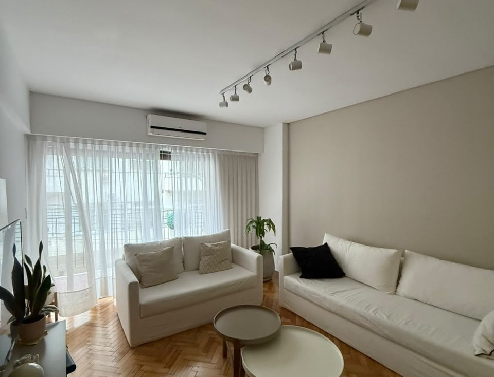
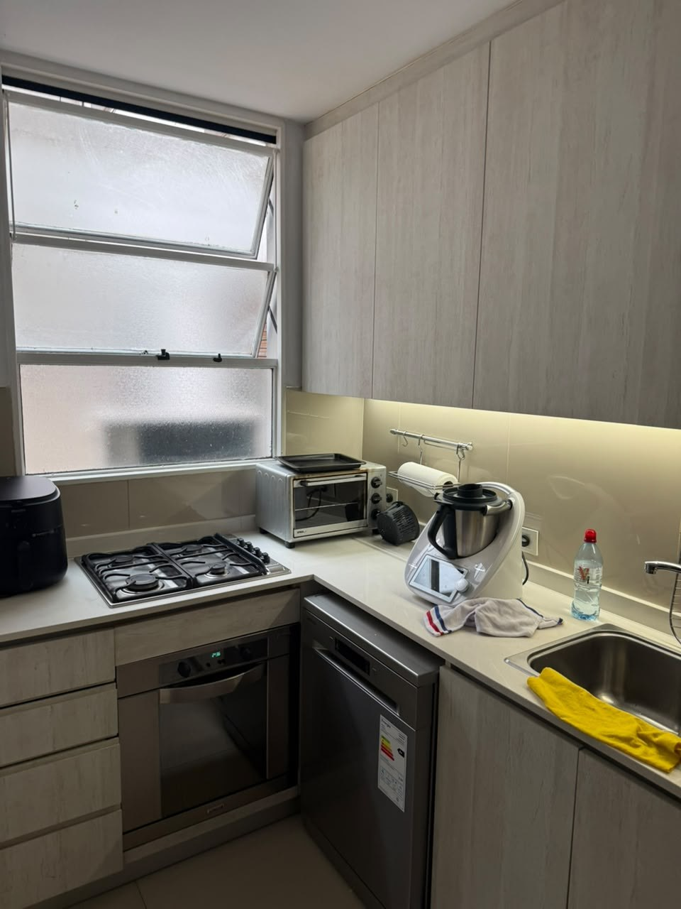
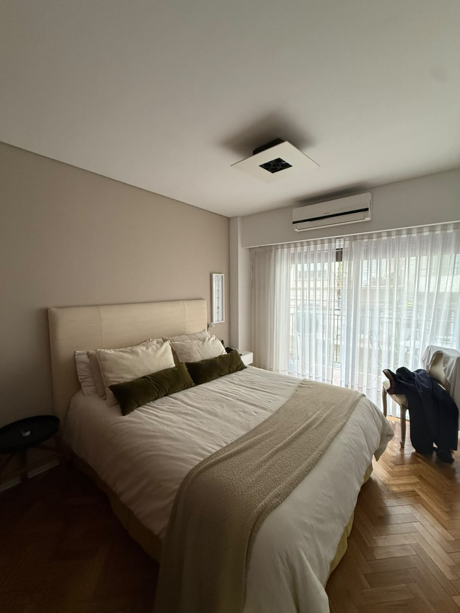
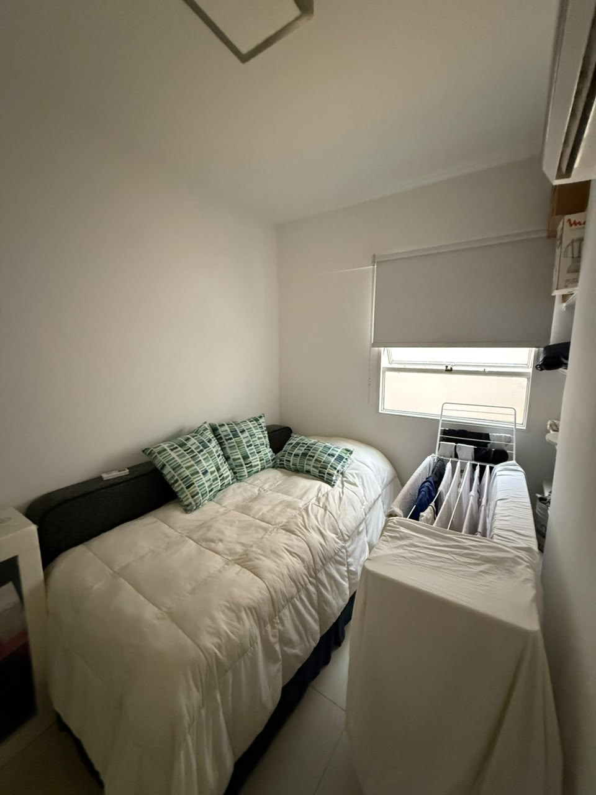
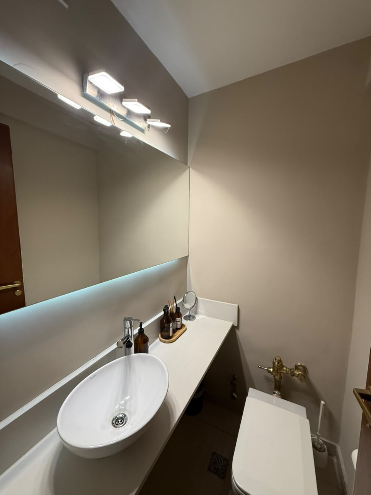

Unidad de tres dormitorios —uno en suite— más dependencia de servicio, en el 2° piso de un edificio de valor patrimonial sobre calle Arenales, en pleno corazón de Recoleta.
La propiedad fue objeto de una refacción integral: pisos de parqué en excelente estado, cocina y baños completamente renovados, carpintería y aberturas de muy buena calidad, calefacción por losa radiante y sin humedades. El resultado es una unidad que, pese a la antigüedad del edificio, funciona y se percibe como una unidad a estrenar, con una calidad constructiva de 10/10.
| Ubicación | Arenales 2039, piso 2° B — Recoleta, CABA |
| Orientación | Sur — buena luminosidad, vista regular (frente) |
| Superficie cubierta | 101 m² |
| Superficie total | 109 m² (balcón de 8 m²) |
| Ambientes | 3 dormitorios (uno en suite) + dependencia de servicio |
| Baños | 2 baños completos + 1 toilette |
| Living / comedor | Integrado |
| Cocina | Separada, totalmente renovada |
| Lavadero | Lavadero y tender independientes |
| Calefacción | Losa radiante |
| Estado de conservación | Excelente — refacción integral, sin humedades |
| Calidad constructiva | 10/10 |
| Documentación | Escritura. Apto crédito hipotecario |
Arenales 2039 se ubica en pleno corazón de Recoleta, uno de los barrios más tradicionales y mejor conectados de la Ciudad de Buenos Aires, con más de 40 líneas de colectivo, subte y tren en su entorno inmediato.
A metros de la Av. Santa Fe —eje comercial y gastronómico— y de la Av. Las Heras, combina la vida de barrio con acceso directo a colegios de referencia (Escuela Superior de Comercio Carlos Pellegrini, Escuela Argentina Modelo), centros de salud, museos y la oferta cultural que distingue a la zona. En sus corredores de mayor categoría —Av. Alvear, Av. Quintana— el valor del m² se sostiene históricamente por encima de USD 3.000, siendo Recoleta, junto con Palermo y Puerto Madero, uno de los tres barrios porteños con los valores más altos de la ciudad.




| Referencia | Perfil | Precio / Valor | Fuente |
|---|---|---|---|
| Arenales 2800, 3° piso | 3 amb., reciclado impecable, ~159 m² tot.* | USD 280.000 | Argenprop, 2026 |
| Promedio de zona | Usados, buen estado, Recoleta | USD 2.800 – 3.500 /m² | Relevamiento sectorial, 2026 |
| Promedio general | Todo tipo de unidades, Recoleta | USD 2.459 /m² | Mudafy, ene. 2026 |
*Superficie total del comparable incluye semicubiertos; su incidencia por m² no es directamente comparable con la unidad tasada. Valores relevados en portales públicos y fuentes sectoriales a agosto de 2026, sujetos a variación y verificación directa antes de su uso.
Familia joven, poco numerosa, que prioriza ubicación consolidada y terminaciones de alta calidad por sobre piso alto o vista panorámica.
Unidad impecable (10/10). Único punto de mejora sugerido: unificar los zócalos existentes para terminar de armonizar con el resto de la refacción. No corresponde valorarla con los mismos parámetros que una unidad equivalente ubicada de un 5° piso hacia arriba — considerando esa salvedad y la antigüedad del edificio, es una unidad excelente con una muy buena relación entre calidad y precio.